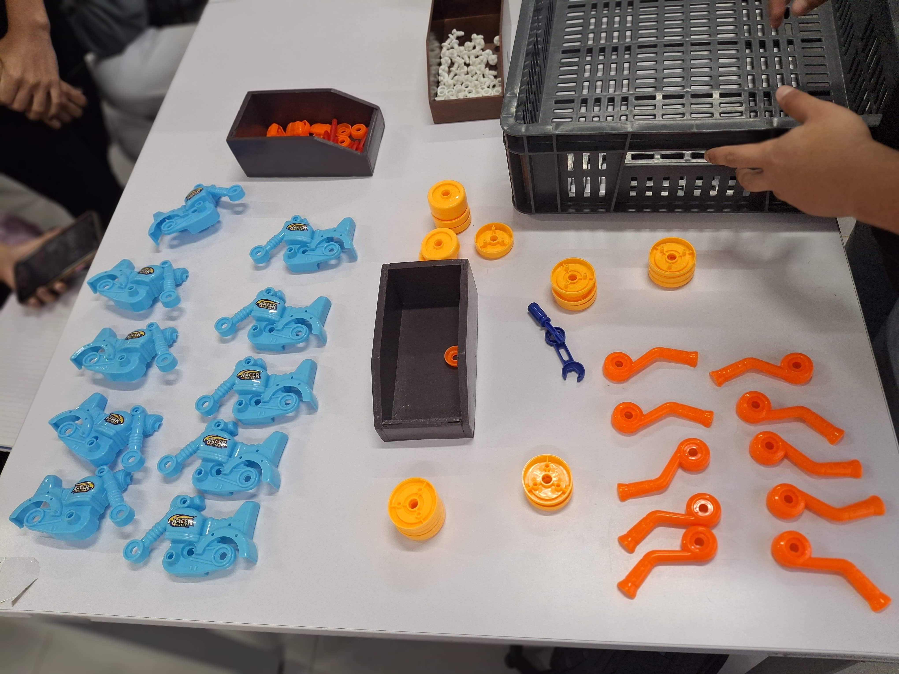
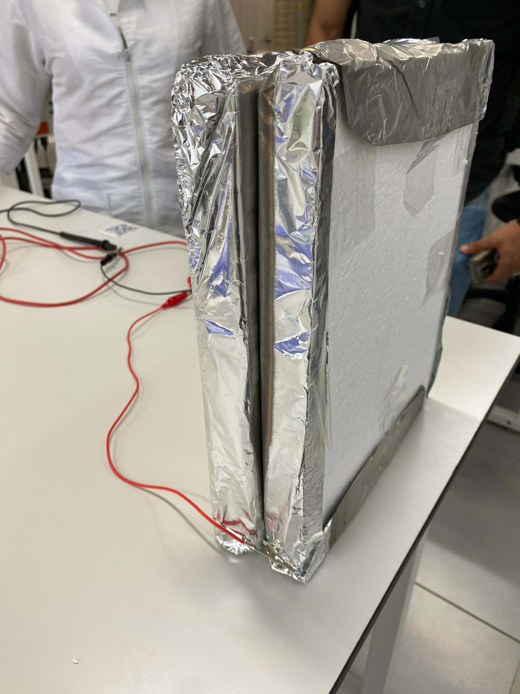

Hoja de Presentación
Título del portafolio: Mi Viaje de Autodescubrimiento
Nombre completo: Zharik Martinez Polo
Semestre y año: Tercer semestre, 2025
Fecha de entrega: 30 de mayo de 2025
Asignaturas:
- Cálculo Vectorial
- Física de Campo
- Electiva de Humanidades II
- Fundamentos de Sistemas Productivos y Logísticos
- Análisis Inferencial de Datos
- BIVE III
Sobre Mí
Mi nombre es Zharik Martinez Polo, soy estudiante de Ingeniería Industrial en la Universidad de la Costa...
Valores personales: La honestidad, la empatía y la disciplina
Aspiraciones actuales: En este momento, mis aspiraciones se centran en fortalecer mis competencias como ingeniero...
Mi mantra favorita: "El éxito no se logra solo con cualidades especiales. Es sobre todo un trabajo de constancia, de método y de organización"
Descripción de la Asignatura y Contenido
Descripción: En este semestre, se abordaron temas fundamentales para mi formación en ingeniería, donde las asignaturas no solo profundizan en las bases científicas y matemáticas, sino que también fortalecen habilidades prácticas y de análisis crítico.
Unidades estudiadas:
- Cálculo Vectorial: Estudio de vectores, campos vectoriales y sus aplicaciones en la física. Esta asignatura es esencial para comprender los fundamentos de la mecánica y el electromagnetismo.
- Física de Campo: Se enfoca en los campos eléctricos y magnéticos, proporcionando una comprensión profunda de cómo interactúan las fuerzas fundamentales a nivel micro y macroscópico.
- Electiva de Humanidades II: Esta asignatura se centra en temas fundamentales de comunicación asertiva, respeto y trabajo en equipo. Durante el curso, se desarrollaron habilidades clave para la interacción efectiva en el entorno profesional y personal. Aprendimos a expresar nuestras ideas de manera clara y respetuosa, promoviendo un ambiente de trabajo colaborativo y positivo. A través de diversas actividades, se exploraron dinámicas grupales que favorecen la resolución de conflictos y la toma de decisiones conjunta, esenciales para el desarrollo profesional en cualquier campo.
- Fundamentos de Sistemas Productivos y Logísticos: Esta asignatura me permitió explorar la optimización de procesos y la cadena de suministro, habilidades clave para mi futuro profesional en ingeniería industrial.
- álisis Inferencial de Datos: Aprendí a utilizar métodos estadísticos avanzados para interpretar datos, fundamental para la toma de decisiones basadas en información cuantitativa.
- BIVE III: Un enfoque en las habilidades de comunicación y trabajo colaborativo, preparándome para proyectos interdisciplinarios en mi carrera profesional.
Objetivos principales: Los principales objetivos de estas asignaturas fueron el dominio de las herramientas matemáticas y físicas para modelar fenómenos reales, y el desarrollo de habilidades socioemocionales como la comunicación efectiva y el trabajo en equipo.
Reflexión personal: Este curso me invitó a explorar herramientas para conectar con mi propósito personal, fortalecer mis metas y reflexionar sobre el camino hacia una vida más significativa. A través de la escritura y el análisis, me he acercado más a mi desarrollo personal y profesional, aprendiendo a gestionar conflictos, expresar emociones y proyectar mis aspiraciones a futuro.
Actividades Realizadas
Nombre de la actividad: Proceso de armado de Motos
Fecha de realización: 08-04-2025
Descripción: En la imagen se observa un proceso de ensamblaje de motos de juguete. El objetivo era identificar las mejores prácticas de ensamblaje, tomando tiempos para cada tarea, analizando la estandarización de los movimientos y las posturas adecuadas. Se estaba evaluando el diseño de los puestos de trabajo para garantizar que fueran ergonómicos y eficientes, buscando optimizar los tiempos de ensamblaje y mejorar la productividad mediante la estandarización del trabajo.
Nombre de la actividad: Diseño y construcción de un capacitor
Fecha de realización: 01-04-2025
Descripción: En la imagen se muestra un experimento en el que se estaba construyendo un capacitor. Durante la asignatura de Física de Campos, diseñamos y analizamos el funcionamiento de este dispositivo. El capacitor se formó utilizando materiales como aluminio y poliestireno, y se conectaron cables para medir su capacidad de almacenamiento de carga. Este proyecto nos permitió comprender cómo funcionan los capacitores en términos de almacenamiento de energía eléctrica y el impacto de variables como la distancia entre las placas y el material dieléctrico utilizado.
Lo que Aprendí
Conocimientos teóricos:Conocimientos teóricos:
- Cálculo Vectorial: Aprendí a calcular divergencia, rotacional y aplicarlos en situaciones prácticas de electromagnetismo y mecánica.
- Física de Campo: Profundicé en el concepto de campo eléctrico y magnético, y cómo se modelan con ecuaciones matemáticas.
- Análisis Inferencial de Datos: Dominé el uso de técnicas estadísticas como pruebas de hipótesis y análisis de regresión para interpretar datos en el contexto de la toma de decisiones
Habilidades prácticas: Apliqué métodos matemáticos y físicos en situaciones prácticas, como la resolución de problemas con el uso de integrales y derivadas parciales. En Fundamentos de Sistemas Productivos y Logísticos, utilicé software para modelar y optimizar procesos.
Competencias socioemocionales: Las asignaturas como BIVE III me ayudaron a mejorar mis habilidades de comunicación escrita y oral, así como mi capacidad para trabajar en equipo, resolver conflictos y manejar situaciones bajo presión.
Competencias que adquirí
- Comunicación escrita: Fortalecí mi capacidad para expresar ideas complejas de manera clara y coherente, especialmente en los informes de análisis de datos y en los proyectos de física.
- Autoconocimiento: Al reflexionar sobre los contenidos de la Electiva de Humanidades II, pude identificar mis valores y cómo estos influirán en mi práctica profesional.
- Gestión emocional: Desarrollé estrategias para gestionar mis emociones en situaciones de estrés, como en los exámenes o cuando trabajo en proyectos de grupo.
- Creatividad: Participé en actividades de resolución de problemas que requerían pensar de manera innovadora, como el diseño de soluciones logísticas en la asignatura de Fundamentos de Sistemas Productivos.
- Pensamiento crítico: Desarrollé habilidades de análisis crítico en Análisis Inferencial de Datos, evaluando la validez de los resultados obtenidos a partir de los datos y utilizando las herramientas estadísticas de manera efectiva.
- Trabajo colaborativo: Me involucré activamente en proyectos de grupo, donde aprendí a gestionar el trabajo en equipo y a aportar de manera equitativa a las tareas asignadas.
Tus experiencias favoritas
Resolución de problemas en Cálculo Vectorial: Esta actividad me permitió aplicar conceptos abstractos de forma práctica, algo que disfruté mucho. La satisfacción de encontrar soluciones a problemas complejos fue una experiencia valiosa.
Proyecto final en Fundamentos de Sistemas Productivos: Trabajar en un proyecto real de optimización de procesos fue muy enriquecedor. Me permitió aplicar lo aprendido en clase de una manera tangible y me motivó a investigar más sobre la eficiencia industrial.
Tus Inquietudes
Desafíos con el contenido de física: Algunas de las leyes de campo y electromagnetismo fueron complejas de entender, especialmente al aplicar integrales en varios contextos.
Gestión del tiempo: En algunos momentos, me fue difícil balancear el trabajo en equipo con la carga de estudios individuales. Esto me llevó a reflexionar sobre cómo mejorar mi gestión del tiempo.
Tus Sugerencias
Aspectos positivos a mantener: La combinación de asignaturas teóricas y prácticas es muy efectiva. Las actividades de Análisis Inferencial de Datos me permitieron aplicar conocimientos estadísticos de manera real y me ofrecieron una visión más clara sobre cómo interpretar datos en situaciones reales.
Recursos adicionales que recomiendo: Algunas de las leyes de campo y electromagnetismo fueron complejas de entender, especialmente al aplicar integrales en varios contextos.